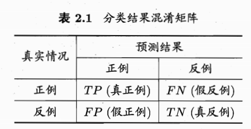
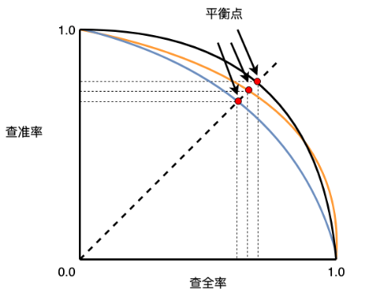
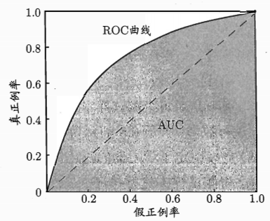
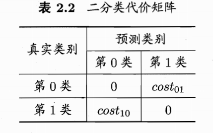
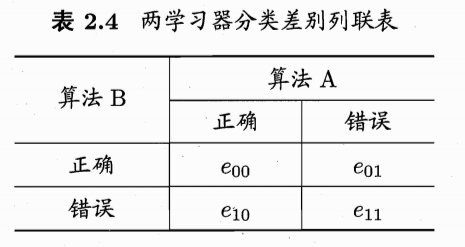
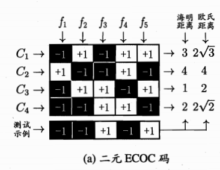
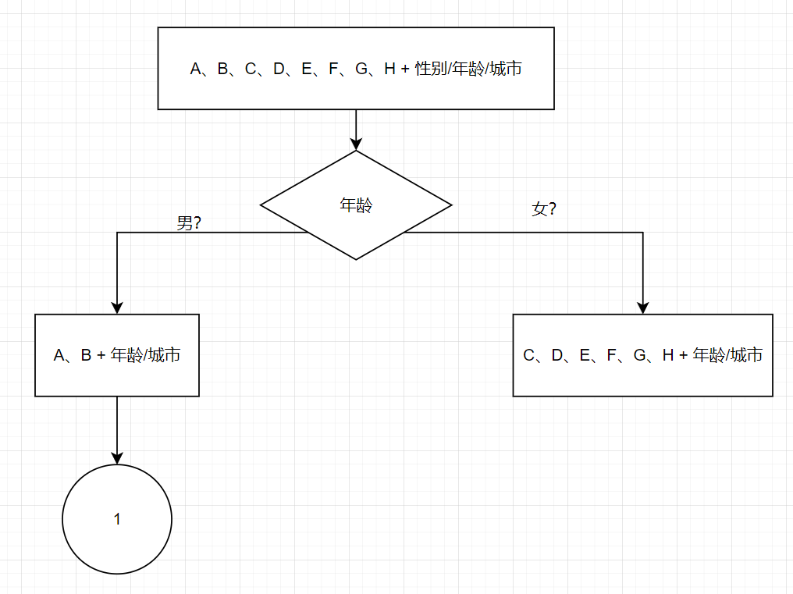
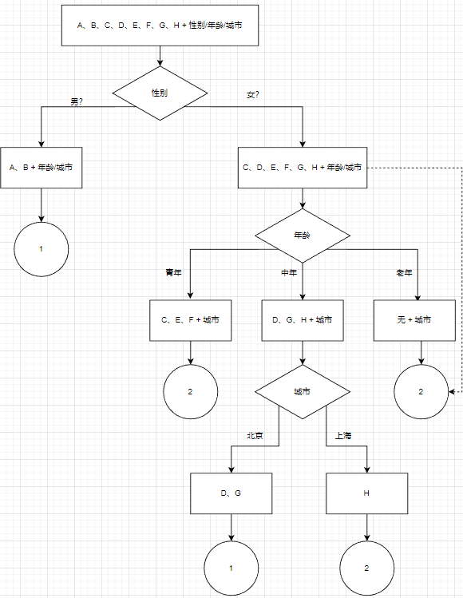
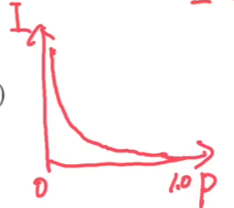

参考内容：《机器学习》周志华
成绩构成：
- 考勤、作业、研讨：10%
- 项目：40%
- 期末：50%
一. 绪论
根据训练数据是否拥有标记数据，学习任务大致可分为两类：监督学习、无监督学习。
- 分类和回归是前者的代表，聚类是后者的代表
- 聚类意思是在训练过程中，机器会自动的对事物的潜在概念进行划分，并把物体分成若干组
模型适用于新样本的能力，称为泛化能力
通常假设样本空间中全体样本服从一个位置分布\(\mathcal{D}\)，我们获得的每个样本都是独立地从这个分布上采样得到的，即“独立同分布”。
假设空间
- 简单理解，就是所有输入的状态
- 书中举了个例子，有A、B、C三种属性，分别有3、2、2种取值方式。学习目标是某个状态\((a, b, c)\)是否是牛逼的？求所有状态数。
- 对于属性A，其实有4种状态，\(a_1, a_2, a_3, *\)，\(*\)表示这个属性取什么无所谓。对于B、C属性同理
- 那么状态数就有：\(4 * 3 * 3 = 36\)种
- 其实还漏了一种，还有一种状态是世界上没有"牛逼"这个概念，也就是\(\phi\)状态。
- 所以这个例子的总状态数是37种。
- 我来列举其中的几种：
- A是\(a_1\)，B是\(b_2\)，C是\(c_3\)时，是牛逼的
- A是\(*\)，B是\(b_1\)，C是\(*\)时，是牛逼的
- \(\cdots\)
- 世界上没有"牛逼"这个东西
版本空间
简单理解，就是把假设空间中不符合样本的所有假设剔除掉的空间
以书中例子为例
- 根据表1.1，我们知“好瓜”的概念是成立的，所以先删除 \(\phi\) 的假设
- 根据样本（（色泽=青绿）（根蒂=蜷缩）（敲声=浊响））——>好瓜，删除所有状态对不上的假设
- 根据样本（（色泽=乌黑）（根蒂=蜷缩）（敲声=浊响））——>好瓜，删除所有状态对不上的假设
这里把（（色泽=乌黑）（根蒂=蜷缩）（敲声=浊响））删除，这个和样本2符合，不要觉得心虚，因为利用样本2进行删除的时候也会删掉（（色泽=青绿）（根蒂=蜷缩）（敲声=浊响））这样刚好留下了（（色泽=*）（根蒂=蜷缩）（敲声=浊响）
- 根据样本（（色泽=青绿）（根蒂=硬挺）（敲声=清脆））——>不是好瓜，删除所有状态对上的假设
- 根据样本（（色泽=乌黑）（根蒂=稍蜷）（敲声=沉闷））——>不是好瓜，删除所有状态对上的假设
- 所以最后剩下了三个假设，这三个假设我们称之为版本空间：(色泽 = , 根蒂 = 蜷缩, 敲声 = )、(色泽 = , 根蒂 = , 敲声 = 清脆)、(色泽 = *, 根蒂 = 蜷缩, 敲声 = 清脆)
归纳偏好
- 现实问题中，我们常面临很大的假设空间，但学习过程是根据有限的样本训练集进行的，那么对于不同版本的训练集，就会有不同的版本空间。版本空间内每一个假设都可以判断上面数据集中的每一条数据，是好瓜还是不是好瓜，但是用不同的假设判断一条新数据可能会得出不一样的结果，这就属于“归纳偏好”。
二. 模型评估与选择
- 精度 = 1 - 错误率
- 学习器在训练集上的误差叫“训练误差”或“经验误差”
- 学习器在新样本上的误差叫“泛化误差”。显然，我们想要泛化误差小的学习器。
- 过拟合是指训练误差很小，但是泛化误差不理想。欠拟合是指俩误差都不理想。
模型评估方法
评估方法存在的意义：实际中，我们不可能直接拿到泛化误差，因为泛化误差是指实际情况的误差。产品都没开发出来咋获得嘛。而训练误差又由于过拟合现象的存在而不适合作为标准。所以，这时候就需要设计一些精妙的评估方法
留出法
- 将数据集D切为训练集S和验证集T
- 需要注意，S和T的划分要尽可能保持数据分布的一致性。例如在分类任务中至少要保证样本的类别比例相似
- 为了结果可靠，可以进行多次留出法，用平均值作为最终结果
- 留出法的缺点：我们希望的是评估用D训练出的模型的性能，但留出法本质上是评估的S训练出来的模型的性能。这就会陷入一个窘境：若S包含绝大多数样本，虽然S与D的差距拉近，但是T太小导致评估结果可能不稳定；若S太少，S与D的差距就更远了。所以这个bug没有完全的解决方案，常见做法是将约1/5 ~ 1/3的样本用于测试，剩下的用于训练
交叉验证法
- 将D划分为k个大小相似的互斥子集：\(D = D_1 \cup D_2 \cup \cdots \cup D_k\)。然后枚举\(D_i\)，每次(全集 - \(D_i\))作为训练集，\(D_i\)作为验证集。进行k次训练测试，最后返回k次结果的均值。
- 可以发现，交叉验证法的稳定性和保真性很大程度取决于k，通常取10，称为10折交叉验证
- 需要注意，\(D_i\)尽可能保持数据分布的一致性
- 为了结果可靠，可以进行多次交叉验证法，用均值作为最终结果。常见的有：10次10折交叉验证
- （当k = D样本数量时，是交叉验证法的一个特例，称为留一法）
自助法
- 无论是留出法还是交叉验证法，S != D，所以必然会存在一定偏差。留一法虽然可以使得S \(\to\) D，但是训练集太大计算复杂度太高。有没有两全其美的方法呢——自助法。
- 做法：假设D样本数为m，则进行放回随机采样m次，得到D'。用D'作为训练集，D'作为验证集。
- 样本在m次采样始终不被采到的概率：
\[ \lim_{m\mapsto\infty}\left(1-\frac1m\right)^m\mapsto\frac1e\approx0.368 \]
- 即数据集D中约36.8%的样本不会出现在D'中。
- 优点：评估的模型和期望评估的模型都使用了m个样本，但仍有1/3的数据供我们验证。在数据集较小或难以划分训练/验证集时很有用。
- 缺点：自助法生产的数据集改变了初始数据集分布，会引入估计偏差。因此数据量充足时，留出法和交叉验证法更常用
在进行完模型评估（也就是训练和评估）后，需要再将数据集D全部丢进模型训练一次。这么做是因为模型评估时S != D。
性能度量
- 当得到一个模型后，如何评估它的泛化能力呢？显然需要去度量它的性能，衡量模型泛化能力的评价标准，就叫性能度量。不同的性能度量往往会导致不同的评判结果。
- 回归任务最常用的性能度量是“均方误差”：
- 离散：\(E(f; D) = \frac1m\sum_{i=1}^m(f(x_i) - y_i)^2\)
- 一般：\(E(f; \mathcal{D}) = \int_{x \sim \mathcal{D}}(f(x) - y)^2p(x)dx\)
- ok，接下来介绍分类任务的性能度量
错误率和精度
- 错误率定义
- 离散：\(E(f; D) = \frac1m\sum_{i=1}^m\mathbb{I}(f(x_i) \ne y_i)\)
- 一般：\(E(f; \mathcal{D}) = \int_{x \sim \mathcal{D}}\mathbb{I}(f(x)\ne y)p(x)dx\)
- 精度定义
- 离散：\(acc(f; D) = \frac1m\sum_{i=1}^m\mathbb{I}(f(x_i)=y_i)=1-E(f; D)\)
- 一般：\(acc(f; \mathcal{D}) = \int_{x \sim \mathcal{D}}\mathbb{I}(f(x)=y)p(x)dx=1-E(f; \mathcal{D})\)
- 错误率定义
查准率、查全率、F1
- 举个例子，若我们关心“挑出的西瓜中有多少比例是好瓜”以及“所有好瓜中有多少比例被挑了出来”。前者我们用“查准率”(precision)描述，后者用"查全率"(recall)来描述。
- 对二分类来说，我们将预测结果抽象为混淆矩阵：
- 
- （TP, true positive表示它确实是正例，表示我们预测对了。TN, true negative表示它确实是反例，表示我们预测对了。）
- 显然$TP + FN + FP + TN = $样例总数
- 查准率：\(P = \frac{TP}{TP + FP}\)
- 查全率：\(R = \frac{TP}{TP + FN}\)
- 可以发现，查准率和查全率都兼顾有些困难。因为如果想让查全率高，那么就要增加选瓜数量，但是选瓜数量增加后，选出的瓜中是好瓜的概率可能就下降，即查准率下降；若希望选出的好瓜比例高，那么只挑选最有把握的瓜，这样难免就会漏掉不少好瓜，即查全率较低。通常只有在一些简单任务中，才能使P和R都很高。
- 所以，有没有直观的比较方法呢——PR图。
- 我们根据学习器的预测结果对样例排序，＂最可能＂是正例的排在最前边或者说最左边，＂最不可能＂是正例的排在最后边或者说最右边．按此顺序逐个把样本作为正例进行预测，每次计算测试样本的查准率和查全率并把这两项作为PR曲线的纵轴和横轴。
- 
- 显然若一条曲线包住了另一条曲线，那么说明它在任意时刻表现都好。如果俩曲线有相交，那么就比较下俩曲线所形成的面积，谁大谁牛逼。
- 当然面积可能不好算，所以我们直接用“平衡点”（BEP, 即P = R时的R坐标）来衡量，谁平衡点大谁牛逼。但是平衡点这方法还是太简陋了，所以我们使用F1度量（谁大谁牛逼）：
\[ \frac{1}{F_1} = \frac12\cdot (\frac1P + \frac1R) \]
- 为了更定制化，还可以使用\(F_\beta\)度量（\(F_1\)是调和平均，\(F_\beta\)是加权调和平均）：
\[ \frac{1}{F_\beta} = \frac{1}{1+\beta^2}\cdot (\frac1P + \frac{\beta^2}{R}) \]
- \(\beta\)度量了查全率对查准率的相对重要性，\(\beta=1\)为一样重要，\(\beta > 1\)表示我们更重视查全率。
- 如果有多个混淆矩阵呢？
- 第一种方法，直接对所有P、R、F1取均值作为最终结果。这样得到的结果叫做：宏查准率、宏查全率、宏F1
- 第二种方法，先对所有混淆矩阵对应四个位置取均值，再算出对应的P、R、F1。这样得到的结果叫做：微查准率、微查全率、微F1
ROC和AUC
- ROC曲线跟PR曲线绘制流程一样，只是横坐标换为了“假正例率”（FPR），纵坐标换为了“真正例率”（TPR）。
- \(TPR = \frac{TP}{TP + FN}, \quad FPR = \frac{FP}{FP + FN}\)
- TPR表示对于全部好瓜，你预测对了百分之TPR；FPR表示对于全部坏瓜，你预测错了百分之FPR。
- 显然TPR越高越好，FPR越低越好。
- ROC曲线画出来的感觉如下：
- 
- AUC是ROC曲线的面积。显然如果一个曲线包住另一个，但它就更牛逼。如果俩线有相交，那么就看看谁的AUC更大，越大越牛逼。
代价敏感错误率和代价曲线
- 在现实中同样是判断错误，但是后果可能不同。比如门禁系统错误的把陌生人放进来的危害肯定比把可通行人拦在外边危害更大。所以同样是判断错误，我们需要赋予其不同的权值。最后的目标是使平均代价最小。
- 所以可以抽象出代价矩阵的概念：
- 
- 代价敏感错误率：
\[ E(f; D; cost) = \frac1m(\sum_{x_i \in D^+}\mathbb{I}(f(x_i) \ne y_i) \times cost_{01} + \sum_{x_i \in D^-}\mathbb{I}(f(x_i) \ne y_i) \times cost_{10}) \]
- 当不同后果的权重不同时，上面说的ROC曲线就不能直接反映出学习器的期望总体代价了。所以这时候我们需要“代价曲线”。
- 略
比较检验
目前，我们已经可以使用某种模型评估方法，测出某个性能度量的结果。
但是泛化性能是对新样本进行预测的性能，新样本看成一个总体，那么这个总体我们永远无法完整获得，也就是真实泛化性能永远也不知道是多少。从这个总体中抽样得到一个样本集合，也就是我们通常说的“测试集”，很显然，每次抽样，获得的测试集都不相同，从而从测试集计算得到的性能值也就不同。从测试集得到的性能值可以看成是总体泛化性能的一个估计值，基于这个估计值可以对总体泛化性能进行假设检验和区间估计。
如果\(\mathcal{D}\)是服从二项分布的。那么测试集样本容量n你是知道的，错误次数k你也是知道的。那么你可以开始玩假设检验。比如假设\(H_0: p_0 \le 0.5\)。然后你就假设你这个假设是对的呗，然后算一算在此假设下，错误次数为k的概率。如果算出来的概率小于\(\alpha\)（显著性水平），说明在此假设下发生这件事的概率极低，那么说明你假设是错的。如果概率大于了\(\alpha\)，说明至少我不能信心满满的否决你的假设了，我只能说我有\(1 - \alpha\)置信度认为你的假设是正确的。
很多时候我们并非做一次留出法估计，而是多次。所以我们会得到k个测试错误率。则我们可以计算平均错误率及其方差。那么检验统计量\(\tau_t = \frac{\sqrt{k}(\mu - \epsilon_0)}{\sigma}\)服从t分布。（\(\mu\)是平均错误率，\(\epsilon_0\)是假设的错误率， \(\sigma\)是前面算的方差）
如果算出来的\(\tau_t\)落在\([t_{-\alpha/2}, t_{\alpha/2}]\)内，则可下置信度为\(1 - \alpha\)的判断认为真实错误率为\(\epsilon_0\)；反之则可下真是错误率不为\(\epsilon_0\)的判断。
以上俩方法都是关于对单个学习器泛化性能的假设进行的检验，但在实际任务中，更多时候我们需要对不同学习器的性能进行比较，方法有：交叉验证t检验、McNemar检验、Friedman检验、Nemenyi后续检验
交叉验证t检验
- 略
McNemar检验
对二分类问题，使用留出法不仅可估计出学习器A、B的测试错误率，还可以获得俩学习器分类结果的差别，即：两者都分类正确、都错误、A对B错，A错B对的次数，即“列联表”：

若我们的假设是俩学习器性能相同，则应有\(e_{01} = e_{10}\)。则\(|e_{01} - e_{10}| \sim N(1, e_{01} + e_{10})\)。
则有：\(\tau_{\chi^2}=\frac{(|e_{01} - e_{10}| - 1) ^ 2}{e_{01} + e_{10}}\)
即\(\tau_{\chi^2}\)服从自由度为1的卡方分布。
当\(\tau_{\chi^2}\)小于临界值\(\chi_\alpha^2\)时，即认为俩学习器性能没有显著差别；反之则认为有显著差别，平均错误率小的那个更牛逼。
Friedman检验
- 略
Nemenyi后续检验
- 略
偏差与方差
- 为取得良好的泛化能力，则需使偏差较小，此时能够充分拟合数据。并且要使方差较小，因为越小的方差表示受数据扰动的影响小。
- 但是往往两全不能齐美，称为偏差-方差窘境。
- 具体内容略。
三. 线性模型
线性回归
形如\(f(x) = w^\mathrm{T}x + b\)的，就是线性回归
对于有顺序关系的属性，可以将他们赋值为连续或者离散有顺序的数字。对于无顺序关系的属性，用one-hot。
线性回归的loss函数是MSE。
对于偏置项\(b\)，有一个小技巧就是把它纳入特征里，然后\(w\)里多加一项，这样就相当于\(Xw = \hat{y}\)了。然后如果\(X^\mathrm{T}X\)满秩的话，就直接用线代解出最优解就行了。
如果不满秩，可以引入正则化项，
对数几率回归
也叫逻辑回归。
起始就是把前面线性回归\(w^\mathrm{T}x + b\)这个值通过sigmoid函数映射到0 ~ 1之间。通常用来作二分类问题。
sigmoid函数：\(y = \frac{1}{1 + e^{-z}}\)
逻辑回归：\(y = \frac{1}{1 + e^{-w^\mathrm{T}x + b}}\)
另一种写法：\(\ln \frac{y}{1 - y} = w^\mathrm{T}x + b\)
其loss函数是交叉熵。
线性判别分析
略
多分类学习
OvO（One vs One）、OvR（One vs Other）、MvM（Many vs Many）
假设有n个类，OvO就是有\(n(n-1)/2\)个二分类器，俩俩类别有一个分类器。对于一个样例，经过这\(n(n-1)/2\)个分类器过一遍，而是看看哪些类别得分最高，就判定这个样例为哪个类别。这就是OvO的思路。
对于OvR，就是对于每个类别有一个分类器，就是分是当前这个类或者不是。所以一共n个分类器。结果就是看这n个分类器哪个的概率最大，就判定这个样例为哪个类别。
MvM就是每次将若干个类作为正类，若干个类作为负类。MvM中，最常见的一种分类技术叫“纠错输出码(ECOC)”
ECOC，具体来说，就是对n个类别做m次划分，每次划分是一个二分类器，将一部分类别划为正类，一部分划为负类。然后对于一个样例，经过这m个分类器跑一遍，得到预测向量，看看预测向量与类别自身向量的欧氏距离或者海明距离。去差距最小的那个类别作为预测值。
具体看下面这幅图，一目了然。

上面这幅图中，一共有5个分类器，4个类别。然后对于一个样例，经过5个分类器，跑出了(-1, -1, +1, -1, +1)这个预测向量。记此向量为x。那么x与\(C_1\)的向量(-1, +1, -1, +1, +1)的欧氏距离是\(2\sqrt{3}\)，海明距离(即不同的个数)是3。
通过观察，可以发现预测向量与\(C_3\)的欧氏距离和海明距离均最小，那么就判定该样例属于\(C_3\)。
可以发现，EOOC编码越长(分类器越多)，那么纠错能力越强(鲁棒性越好)。
而且可以发现，两个类别\(C_i, C_j\)的编码距离越远越好，这样子区分度就越高。所以我们称任意俩类别之间编码距离最远的编码方式为理论最优编码。
类别不平衡问题
如果有很多个类别，但是训练集中每个类别的样本数不同，这样会不好。所以说有三种方式解决这个问题(假设正样本多，负样本少)：第一就是删掉一些正样本，第二就是增加一些负样本，第三就是使用“再放缩”。
什么叫“再放缩”，具体来说，原本二分类逻辑回归实际是在执行：若\(\frac{y}{1 - y} > 1\)，则预测为正例。那么改一改，改为：若\(\frac{y}{1 - y} > \frac{m+}{m-}\)，则预测为正例，其中\(m+\)是正样本数，\(m-\)是负样本数。
四. 决策树
基本流程
就是一种模拟人脑决策的模型。
举个例子，就明白了。
| 性别 | 年龄 | 城市 | 类别 | |
|---|---|---|---|---|
| A | 男 | 老年 | 北京 | 1 |
| B | 男 | 老年 | 上海 | 1 |
| C | 女 | 青年 | 北京 | 1 |
| D | 女 | 中年 | 北京 | 1 |
| E | 女 | 青年 | 北京 | 2 |
| F | 女 | 青年 | 北京 | 2 |
| G | 女 | 中年 | 北京 | 2 |
| H | 女 | 中年 | 上海 | 2 |
ok来吧，把决策树建出来把。
首先先按性别分呗，那么就会分出：

因为A、B都属于1类，属于没必要继续分下去了，所以直接以叶子节点类别1结束。
ok，那么就右边需要分了，性别这个属性用完了，那么就用年龄开分！

老年，因为没有样本被分到这，所以这里的叶子节点的类别就要看父节点，也就是（C、D、E、F、G、H + 年龄/城市）这个点哪个类别多，可以发现属于类别2的人多，所以老年这个节点就以类别2的叶子节点结束。
然后可以目光看向青年，发现C、E、F都在北京，所以没什么好分的了，那么直接接叶子节点，类别就看看哪个类别人多就哪个，E、F都是2，所以接类别2的叶子节点。
还剩（D、G、H + 城市）这个点了，继续分！

分完H那个点只有它自己了，所以直接接自己类别的叶子节点即可。
然后（D、G）这个点，因为没有属性可用了，所以不用分了。哪个类别多接哪个类别的叶子节点。发现D是1，G是2，一样多，那随便了，我就接了一个类别为1的叶子节点。
至此，我们利用这个数据集，建出了一颗决策树！
相信聪明的你也发现了，我们用按顺序去用每一个属性的，那能不能调换顺序呢？顺序有什么讲究呢？这里头是有学问的，留到下一节讲。
划分选择
- 决策树学习的关键在于如何选择最优划分属性，一般而言，随着划分过程不断进行，我们希望决策树的分支节点所包含的样本尽可能属于同一类别。
- 经典的属性划分方法有：信息增益、增益率、基尼指数
信息增益
首先要知道什么是信息量，信息量具有以下几个性质：
- 非负性：不存在负信息量的事件
- 单调性：事件发生的概率越大，其信息量越小
- 累加性：多个相互独立事件信息量等于各事件信息量之和
香农提出了信息量这个概念，然后他用了一个数学函数，以满足上面的三条性质：\(I(x) = \log \frac{1}{P(x)} = -\log P(x)\)
\(I(x)\)是事件\(x\)的信息量，\(P(x)\)是事件\(x\)发生的概率
图像长这样：

信息量是针对某个具体事件的一种度量方式，香农觉得不够，于是定义了一个名叫“信息熵”的概念。信息熵度量的是随机变量的不确定性：\(H(X) = E[-\log P(X)] = -\sum_{x \in X} P(x)\log P(x)\)
- 信息熵其实就是“随机变量的信息量的期望”，展开后就是所有事件概率与其信息量乘积之和
- \(H(X)\)是随机变量\(X\)的信息熵
- \(H(X)\)是非负的，如果\(X\)的可能性越多(越混乱)，那么\(H(X)\)越大
条件熵也是一种信息熵，它考虑的是有两个随机变量的情况，且其中一个随机变量已知的情况时的期望信息熵：
\[ \begin{align*} H(Y | X) &= \sum_{x \in X}P(x)H(Y|X=x) \\ &= -\sum_{x \in X}P(x) \sum_{y \in Y} P(y|x)\log P(y|x) \\ &= -\sum_{x \in X}\sum_{y \in Y}P(x,y)\log P(y|x) \end{align*} \]
- OK，知道了这几个概念，我们来看看如何将信息熵的概念用到决策树的划分选择上！
- 对于样本集D，每个样本不是有一个label嘛，假设有k种label，那么样本集D的信息熵\(H(D)\)就为：
\[ H(D) = -\sum p_k \cdot \log p_k \]
- \(p_k\)是第k个label占全部label的比例。这个定义很好理解，如果全部样本都是同一个label，那么信息熵就是0。如果有很多个label，那么信息熵就比较大，说明混乱程序比较高，不确定性程度高。
- 那如何知道按照什么属性划分会比较好呢？我们希望的是划分之后所产生的子数据集的纯度越高越好，所以有一个很自然的想法就冒出来了：我要找到一个属性A，使得\(H(D) - H(D|A)\)最大，即划分后的信息熵尽可能小，这样就满足了划分后数据集纯度尽可能大的要求了。bingo，\(H(D) - H(D|A)\)有个名字，“信息增益”。信息增益越大，意味着使用属性A来进行划分所获得的纯度提升越大。
- 用数学公式表示maybe会更直观些：
\[ \begin{align*} &G(D, A) = H(D) - H(D | A) \\ &H(D) = -\sum p_k \cdot \log p_k \\ &H(D | A) = \sum_{i=1}^{C} \frac{cnt_{D_i}}{cnt_D} \cdot H(D_i) \end{align*} \]
\(G(D, A)\)就是考虑用属性\(A\)进行划分时的信息增益；\(cnt_D\)是数据集\(D\)的样本数量；\(cnt_{D_i}\)是数据集按照\(A\)划分后，第\(i\)类的样本数量；\(C\)是按照\(A\)划分后，划分出的类别数。
至此，如何构建一棵决策树就显然易见了，是一个递归的过程，每次先算出当前数据集D的信息熵\(H(D)\)，然后依次算当前所有属性划分划分之后的信息熵\(H(D|(A/B/C/...))\)，看看哪个的信息增益越大，选最大的划分，划分后得到了新的数据集\(D'\)和属性集，然后对新的数据集和属性集递归做就好了。递归终止条件就是当前数据集的label全一样，或者属性集空了，或者数据集空了。
上面就是用信息增益(ID3)来建树的算法
增益率、C4.5
上面的信息增益算法其实我们没考虑到一个东西，就是不同属性天生包含的类别数不同，例如属性A可能有高、中、矮，但是属性B可能只有瘦、胖。类别多的属性它混乱的几率就会大。为了考虑这一点，所以我们在信息增益的基础上，引入增益率的概念。
直接给出数学定义，\(G(D, A)\)是信息增益(Gain)，\(Gr(D, A)\)是增益率(Gain ratio)
\[ \begin{align*} &G(D, A) = H(D) - H(D | A) \\ &Gr(D, A) = \frac{G(D, A)}{H(A)} \\ &H(A) = -\sum p_k \log p_k \end{align*} \]
例如属性A有2个类别，第一个类别占1/2，第二个类别占1/2，那么\(H(A)\)就是\(-(\frac12 \cdot \log \frac12 \cdot 2)=1\)
稍微改进一下上面的算法，把每次选择最大信息增益改为选择最大增益率的属性。
但简单这样改还不够好，因为增益率对类别数少的属性有偏好。
所以C4.5算法就说：先选出信息增益高于平均信息增益的属性，然后再在这些属性中选出增益率最高的属性作为划分属性！
基尼指数
- OK，前面用熵去衡量数据集“纯度”的做法确实很优美。那现在，基尼指数就是另一种衡量数据集“纯度”的东西。
- 数据集\(D\)的纯度可用基尼值(Gini)来衡量：
\[ Gn(D) = \sum_{i=1}^{C}\sum_{j=1}^{C}p_ip_j = 1 - \sum_{k=1}^{C}p_k^2, \quad i \ne j \]
- 可以发现，基于指数反映了从\(D\)中随机抽取两个样本，其类别lable不一致的概率。假设有2种label，且样本数对半开，那么\(Gn(D)\)就是\(\frac12 \cdot \frac12 = \frac14\)；假设有2种lable，且样本数为9:1，那么\(Gn(D)\)就是\(\frac{9}{10} \cdot \frac{1}{10} = \frac{9}{100}\)。可以发现，基尼系数越小，数据集纯度越高。
- 那么用属性A划分后的基尼指数是多少？
\[ Gn(D, A) = \sum_{k=1}^{C} \frac{cnt_{D_i}}{cnt_D}Gn(D_i) \]
- CART算法就是利用基尼指数来建决策树的算法，它每次看看用哪个属性划分后的基尼指数最小，就用它划分。
剪枝处理
剪枝的目的，就是为了避免把训练集自身的一些特点当作所有数据都具有的一般性质而导致的过拟合。
剪枝的基本策略分为预剪枝和后剪枝。
判断决策树泛化性能是否提升的方法：留出法(留出一部分作为验证集)
预剪枝
- 很简单，就是在划分节点的时候，拿验证集跑一跑，如果划分后效果反而不如不划分，那么就不继续划分该节点了，直接连个叶子节点上去，类别就是该节点内人数最多的类别。（从上到下）
- 优点：降低过拟合风险，显著减少训练时间
- 缺点：欠拟合风险
后剪枝
- 很简单，就是先用算法生成一棵决策树，然后从下到上依次考察是否将节点替换为叶子节点会更优，如果更优，就替换
- 优点：比预剪枝保留了更多分支，欠拟合风险更小
- 缺点：训练时间大
连续与缺失值
连续值和缺失值都是针对属性的值说的。因为在前面讨论的决策树中，我们属性的值都是离散的，例如高、矮、胖、瘦，都是离散的。而现实中可能会存在很多连续值，例如身高是多少cm；也有可能会存在缺失值，比如有个属性是自我性别认知，可能有些人是未知。
首先来看如何处理连续值吧，思路很简单，就是设立划分点，就拿身高这个属性举例，假设样本中，有n个不同的身高，那么划分点就有n个，每确定一个划分点t，其实就可以算出按照t去划分身高这个属性之后得到的信息增益\(G(D, A, t)\)。以用信息增益算法建树举例，那么划分身高这个属性的时候，就是找一个划分点t，使得\(H(D) - G(D, A, t)\)最大即可。
需要注意的是，连续值与离散值有一个地方不同就是，离散值的属性如果用过，那么后面就不会再用来划分了。但是连续值的属性可以再次使用，比如第一次划分是身高是否低于180，进入子节点后可以继续用身高这个属性划分，身高是否低于160。
OK，现在来讨论缺失值。
还是用信息增益算法来举例，当你计算\(H(D), G(D, A)\)的时候，\(D\)就是剔除\(A\)属性有缺失值得到样本子集，然后信息增益就是\(\rho(H(D) - G(D, A))\)，\(\rho\)是无缺失值样本数量占总样本数量的比例。然后选择信息增益最大的属性作为当前的划分属性。
ok，划分属性确定好了，如何划分呢？答案就是给每个样本一个全局变量\(w_i\)，为自己的权重，初始为1。对于那些属性\(A\)无缺失的样本呢，直接划分到对应子集中，对应进入的权重为\(w_i\)；对于那些属性\(A\)缺失的样本，就等无缺失的样本都划分完后，然后划分到每一个子集中，对应进入的权重变为\(w_i \cdot \frac{\sum\text{子集中样本的}w_i}{\sum\text{当前属性无缺失的样本的}w_i}\)。同时将\(\frac{\sum\text{子集中样本的}w_i}{\sum\text{当前属性无缺失的样本的}w_i}\)记录下来作为该子节点的权重（后面验证时会用到）。
那么按照这样的算法，决策树就可以建立起来了。
那么验证时，对于属性缺失的样本，它该进入哪呢？
答案就是当建树的时候发现有缺失时，在验证的时候，就给每一个要验证的样本带一个权重\(w\)，初始值为1。假设走到某个属性A，若该样本在属性A上无缺失，则进入到对应子节点to，\(dfs(to, w)\)；若有缺失，则dfs每个子集都进入，但是进入的权重要乘对应子节点的权重，\(dfs(to_i, w \cdot w_i)\)，对应子节点的权重在建树时已经算好。那么最终会进入到多个叶子节点，选择权重最大的叶子节点的类别判定为该样本的label。
但是这么做，可能会存在对应子节点没有权重，也就是训练时该属性无缺失的情况，那么此时也还是要dfs每个子集都进入，只是把进入的权重改为乘\(\frac{1}{\text{该节点儿子个数}}\)，即等比例进入每个儿子节点。
多变量决策树
略